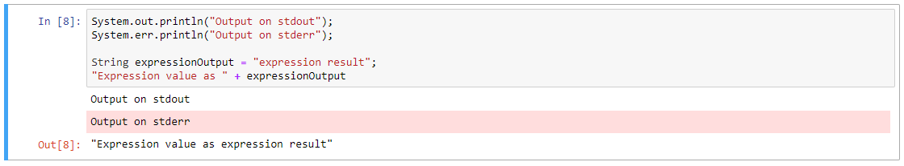
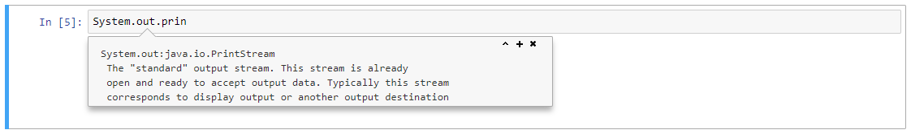

IJava¶


一个用于执行 Java 代码的 Jupyter 内核。该内核通过新的 JShell 工具 执行代码。一些额外的命令应该通过类似于 ipython 魔法的语法，根据需要支持。
内核是全功能的。请看 README 中的 功能列表。任何对新功能的要求或对当前要求的优先考虑都欢迎在 issues 中提出，同时还有错误请求、安装帮助或其他问题。
如果你对构建自己的运行在 JVM 上的内核感兴趣，请查看这个内核所基于的相关项目，jupyter-jvm-basekernel。
目录¶
在线试用¶
点击顶部（或这里的右侧）的 
 徽章，将生成一个运行这个内核的 jupyter 服务器。binder 的基础是 ijava-binder 项目。
徽章，将生成一个运行这个内核的 jupyter 服务器。binder 的基础是 ijava-binder 项目。
功能¶
当前，内核支持
代码执行。
自动补全 (
TABin Jupyter notebook).代码检查（
Shift-TAB在 Jupyter 笔记本中最多可使用 4 次）。彩色的、友好的、错误信息显示。

显示丰富的输出（另见 display.md 和 maven magic）。演示照片中的图表库是 XChart，示例代码取自其 README。(试试这个例子
 )
) eval函数。（参见kernel.md）**注意：签名是Object eval(String) throws Exception。**这是在用户范围内评估表达式（一个单元），并返回实际的评估结果，而不是一个序列化的结果。可配置的评估超时时间


需求¶
Java JDK >= 9。不是JRE。Java 12 是当前的版本，如果选择一个版本，应该考虑到这一点，但如果安装了 java 9、10 或 11 的构建，一切应该仍然可以正常工作。
确保
java命令在 PATH 中，并且使用版本 9。例如：> java -version java version "9" Java(TM) SE Runtime Environment (build 9+181) Java HotSpot(TM) 64-Bit Server VM (build 9+181, mixed mode)
接下来确保
java在安装了 jdk 的位置，而不仅仅是 jre 的位置。使用java --list-modules命令来做到这一点。该列表应包含jdk.jshell。*nix 是
java --list-modules | grep "jdk.jshell"windows 是
java --list-modules | findstr "jdk.jshell"
两者都应该输出
jdk.jshell@，后面是你的 java 版本。
如果内核无法启动，出现如下错误
Exception in thread "main" java.lang.NoClassDefFoundError: jdk/jshell/JShellException ... Caused by: java.lang.ClassNotFoundException: jdk.jshell.JShellException ...然后仔细检查
java是指jdk的命令，而不是jre的命令。一些类似于 jupyter 的环境来使用内核。
一个非详尽的选项清单：
安装¶
在满足 需求 之后，内核可以被安装在本地。任何时候你想移除内核，可以使用 jupyter kernelspec remove java。如果你将内核安装到多个目录，这个命令可能需要运行多次，因为它可能一次只删除 1 个安装。
安装预建的二进制文件¶
获得 最新的 版本的软件，不需要进行编译。参见 从源码安装 来构建最新的提交。
注意：如果你有一个旧的安装或运行 gradlew installKernel 后的调试安装，建议先通过 jupyter kernelspec remove java 将其删除。
从 发布标签 下载该版本。预包装的发行版将在一个名为
ijava-$version.zip的工件中。将其解压缩到一个临时位置。它应该至少有
install.py和java文件夹被解压在那里。用安装 jupyter 时使用的相同的 python 命令运行安装程序。安装程序是一个 python 脚本，具有与
jupyter kernelspec install相同的选项，但还支持配置下面 README 中进一步提到的一些内核属性。# Pass the -h option to see the help page > python3 install.py -h # Otherwise a common install command is > python3 install.py --sys-prefix
检查它是否安装了
jupyter kernelspec list，其中应该包含java。
从源码安装¶
获得最新版本的内核，但在安装时可能会遇到一些问题。如果你想为内核做出贡献，这也是你要走的路线。
下载项目
> git clone https://github.com/SpencerPark/IJava.git > cd IJava/构建和安装内核。
在 *nix 上
./gradlew installKernel在 windows 上
gradlew installKernel使用
gradlew -q help --task installKernel查看配置安装路径的所有可用选项。通过--default、--user、--sys-prefix、--prefix、--path或--legacy选项来改变安装位置。还可以使用--param旗标（重复）来设置（或添加）参数值，参数名称（不是环境变量）在下面的配置部分中指定。例如--param classpath:/my/classpath/root来追加到 classpath 列表中。
配置¶
配置内核可以通过环境变量来完成。这些变量可以在系统中设置，也可以在 kernel.json 中设置。配置可以在安装时完成，可以根据需要经常重复。这些参数在 python3 install.py -h 以及下面的选项列表中列出。通过安装程序（或 gradlew installKernel --param ...:...）进行的配置应该使用 Parameter name 列中的名称。
选项清单¶
环境变量 |
参数名称 |
默认值 |
描述 |
|---|---|---|---|
|
|
|
一个以空格分隔的命令行选项列表，在编译项目时将传递给 |
|
|
|
一个持续时间，指定一个 单个顶层语句 的超时（默认为毫秒）。如果小于 |
|
|
|
一个以文件路径分隔符为界的 classpath 条目列表，用户代码应该可以使用。重要的是：无论什么操作系统，都应该使用正斜杠 “/” 作为文件分隔符。另外，每个路径实际上可以是一个 简单 glob。 |
|
|
|
一个以文件路径分隔符为界的 |
|
|
|
当内核启动时要运行的一个 java 代码块。这可能是类似于 |
简单的 glob 语法¶
支持这种 glob 语法的选项可以用一个类似路径的字符串引用一组文件。支持的基本 glob 查询包括：
*匹配 0 个或多个字符，直到下一个路径边界/。?匹配单个字符以
/结尾的路径隐含地添加了一个*，以匹配 resolved 目录中的所有文件
任何相对路径都是从笔记本服务器的工作目录中 resolved。例如，glob *.jar 将匹配所有 jupyter notebook 命令运行目录下的 jar。
注意：任何操作系统的用户都应该使用 / 作为路径分隔符。
改变 VM/compiler 选项¶
参见 选项列表 部分，了解所有的配置选项。
要改变编译器选项，请使用 IJAVA_COMPILER_OPTS 环境变量（或安装时的 --comp-opts 参数）与一串旗标，就像运行 javac 命令一样。
内核虚拟机参数目前必须在 kernel.json 中分配，方法是在 env 键处添加/编辑一个 JSON 字典，并改变 argv 列表。要找到内核的安装位置，请运行
> jupyter kernelspec list
Available kernels:
java .../kernels/java
python3 .../python35/share/jupyter/kernels/python3
而 kernel.json 文件将在给定的目录中。
例如，为了启用断言，设置 heap 的大小限制为 128m。
{
- "argv": [ "java", "-jar", "{connection_file}"],
+ "argv": [ "java", "-ea", "-Xmx128m", "-jar", "{connection_file}"],
"display_name": "Java",
"language": "java",
"interrupt_mode": "message",
"env": {
}
}
运行¶
这就是文档的分歧之处，每个环境都有自己的选择内核的方式。用 Jupyter 的控制台应用程序从命令行测试，请运行：
jupyter console --kernel=java
然后在 prompt 中尝试：
In [1]: String helloWorld = "Hello world!"
In [2]: helloWorld
Out[2]: "Hello world!"